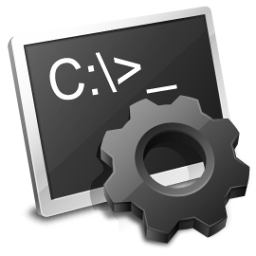
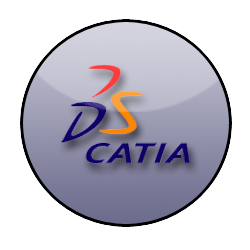
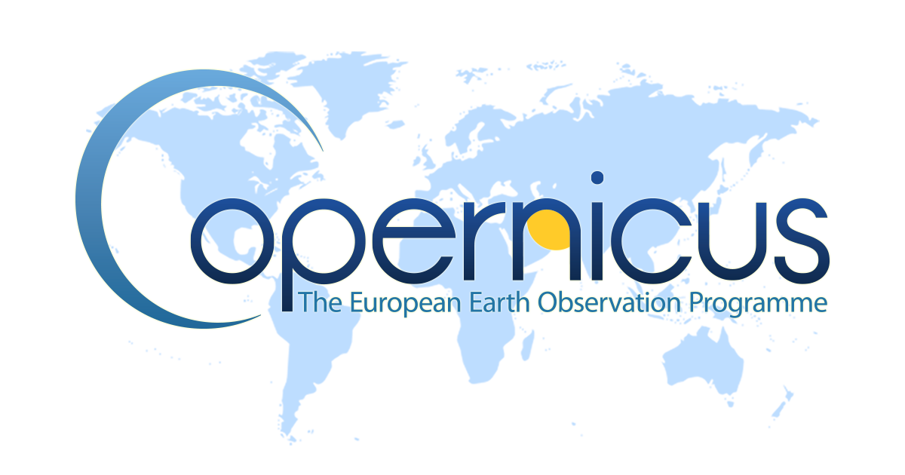
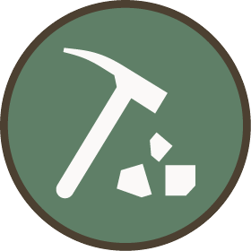
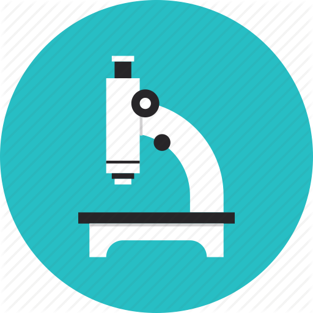

✖ Fermer
Mon interêt se porte principalement sur le développement durable, la programmation informatique (orientée architecture des sytèmes et objet) et sur l'aéronotique.
► COMPETENCES INFORMATIQUES :
•  Langages de programmation : C, C++, java, Assembleur INTEL et ARM, python.
Langages de programmation : C, C++, java, Assembleur INTEL et ARM, python.
• WEB : HTML5, CSS3, JavaScript, PHP, SQL.
•  Logiciels et application : StarUML, Blender 3D, Catia, CDS api, CDS toolbox, PHPmyAdmin.
Logiciels et application : StarUML, Blender 3D, Catia, CDS api, CDS toolbox, PHPmyAdmin.
•  Modélisation de programme : Schématisation de programmes par diagramme UML de classe, de séquence, de cas d'utilisation, de scénario, d'objet, de structure.
Modélisation de programme : Schématisation de programmes par diagramme UML de classe, de séquence, de cas d'utilisation, de scénario, d'objet, de structure.
•  Systèmes d'exploitation : Arch Linux, Debian, Windows (XP, 7, 10).
Systèmes d'exploitation : Arch Linux, Debian, Windows (XP, 7, 10).
•  Administration et réseau : scripting en bash (sur Unix) et en batch (sur Windows).
► CONNAISSANCES AERONOTIQUES :
•  Modélisation et animation de turboréacteur LEAP.
• Connaissance du fonctionnement et de la structures des turboréacteurs LEAP : Composites de la soufflante, compresseur basse préssion, compresseur haute pression, injecteurs, chambre de combustion, turbine haute pression, turbine basse pression.
► CONNAISSANCES EN INFORMATIQUE DURABLE :
•  Manipulation de bases de données environnentales (en python) avec CDS api et CDS toolbox.
• Modélisation 3D de plans sismiques et de glissement de terrain avec EarthQuake 3D et Blender 3D.
► CONNAISSANCES EN GEOLOGIE ET EN BIOLOGIE :
•  Mes intérêts se portent également sur l'étude de phénomènes géologiques :
- Le plan de Wadati Benioff, les failles inverses et normales.
- Les différentes types d'érosions dont la métorisation.
- Les différents horizons du sol (couches du sol) : [1] végétation, [2] humus, [3] couche arable, [4] Sous-sol, [5] Roche Mère.
- La composition minéralogique des roches.
- Le magnétisme terrestre, dont le phénomène des feux follets (phénomène observable en altitude ou il y a une inversion de polarité situé dans le ciel au dessus d'un éclair).
•  Mais ils se portent aussi sur l'étude des métabolismes et catabolismes cellulaires et enzymatique :
- Le cycle de Krebs, différencié en fermentation en milieu anaérobie. Les différentes formes de fermentations : éthanolique (et ses 10 réactions enzymatiques), malolactique et lactique
- La production d'énergie dont la force proton motrice vers matrice amenant à l'ATP synthase.